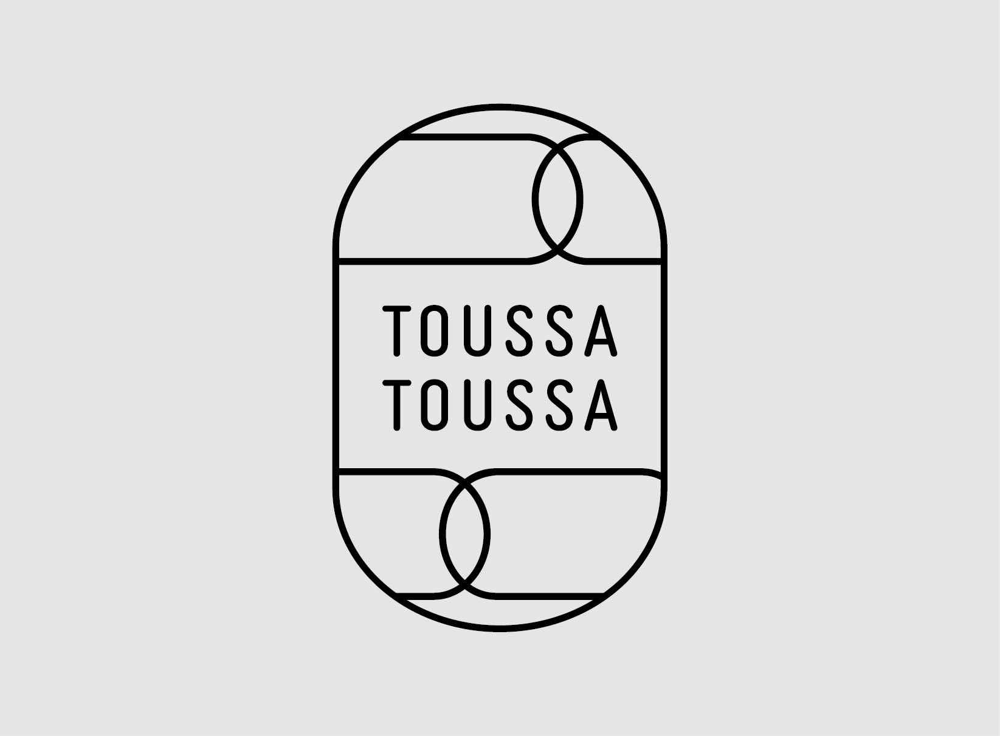
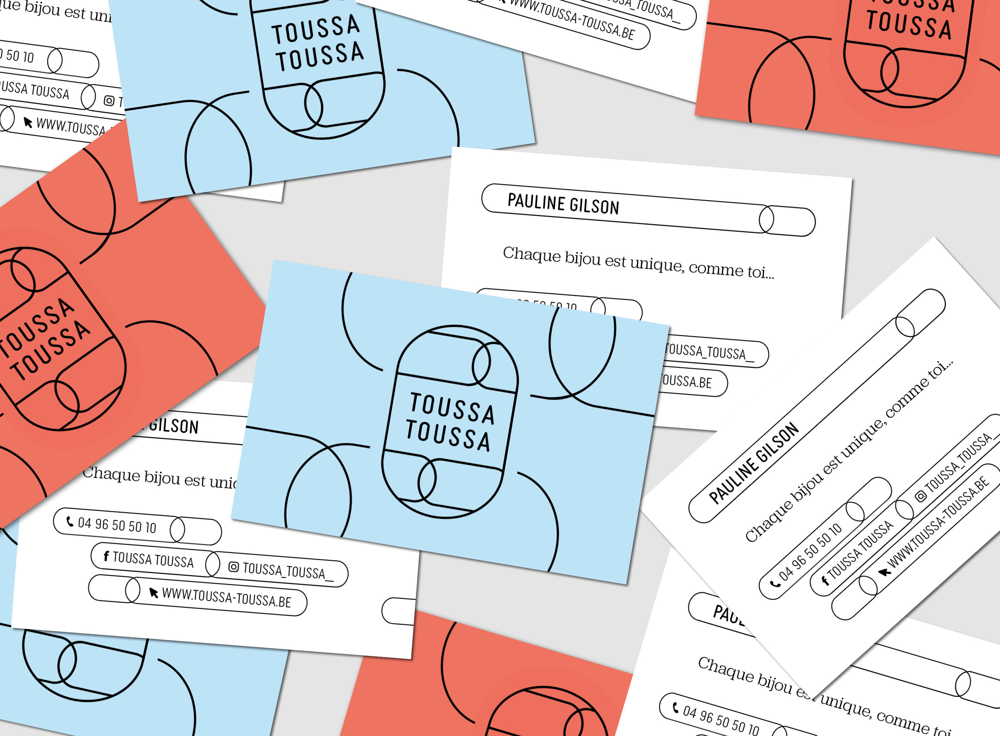
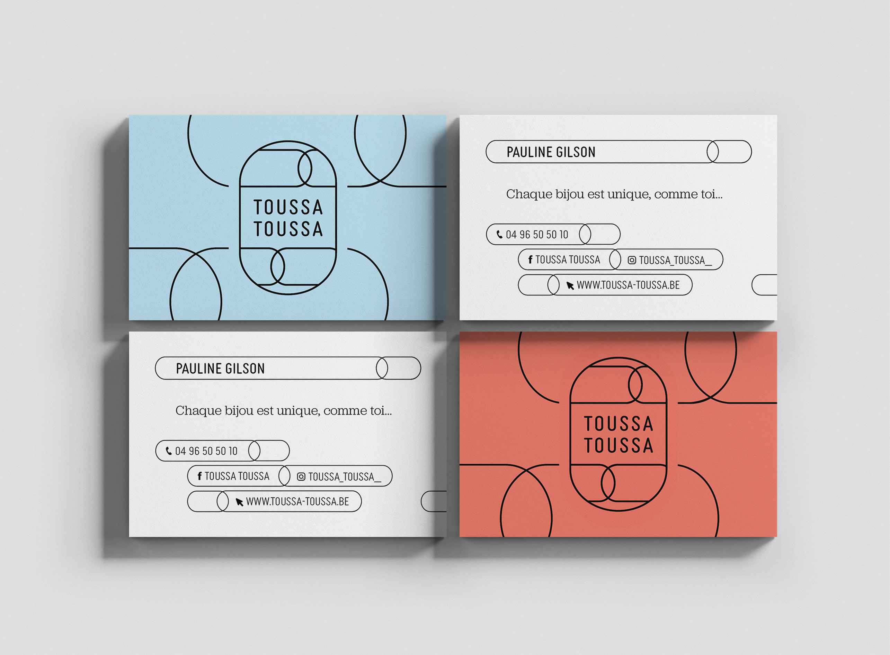
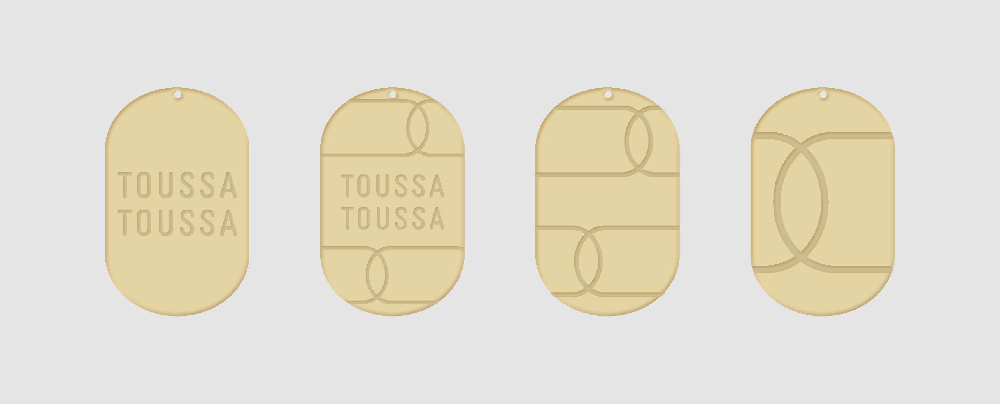

TOUSSA TOUSSA
marque de bijoux
marque de bijoux
(2023)
identité visuelle
logo
carte de visite
site web
déclinaisons
logo
carte de visite
site web
déclinaisons
Toussa Toussa est une marque de bijoux de seconde main.
À partir de l’ancien logo, une refonte a été réalisée pour
lui donner une forme plus contemporaine et intemporelle,
tout en conservant sa silhouette reconnaissable pour maintenir l'identité de marque.
Le nouveau dessin intègre un motif inspiré des mailles de chaînes, décliné sur divers supports :
packaging, cartes de visite, présentoirs, pendentifs, etc.
Cette approche permet une identité visuelle modulable, cohérente et durable.
Le site e-commerce, construit sur Shopify, a également été repensé dans la limite des templates imposés,
afin d’y intégrer les éléments de la charte graphique et d’en améliorer l’ergonomie.




